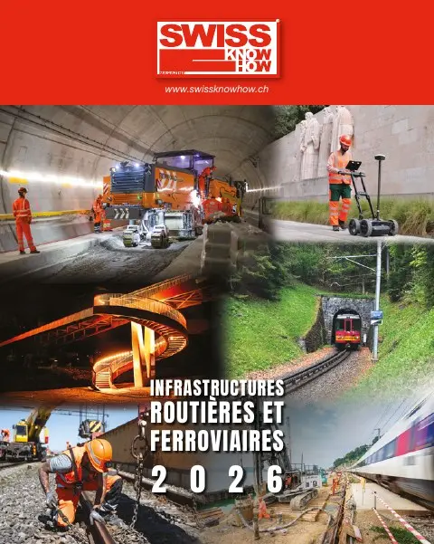

En bref
Publié en allemand, français et italien, cet entretien présente Bergauer AG, éditeur de logiciels de gestion du trafic et des infrastructures, centre de compétence mondial du groupe SWARCO. Urs Friess décrit des systèmes livrés clés en main, du poste de commande à la commande des signaux, pour harmoniser les vitesses, avertir des dangers, réaffecter la bande d’arrêt d’urgence et sécuriser les tunnels en cas de bouchon, panne ou incendie. Les données de trafic sont analysées en temps réel ; la réaction est quasi immédiate, mais le changement d’affichage suit une séquence de plusieurs minutes. L’IA aide surtout à la prévision, la décision restant humaine. Certifiée ISO 27001, l’entreprise insiste sur la cybersécurité et sur la fiabilité absolue exigée dans les tunnels.
« Im Tunnel hingegen dominiert der Sicherheitsaspekt. »— Urs Friess
L'interview intégrale
Entretien avec Urs Friess, Managing Director de Bergauer AG
Monsieur Friess, Bergauer AG développe des logiciels pour des systèmes de gestion du trafic et des infrastructures. Dans quels domaines êtes-vous principalement actifs?
Nous sommes spécialisés dans la gestion intelligente du trafic et des infrastructures – principalement sur les routes à grand débit. Nous optimisons ainsi le flux de trafic des infrastructures existantes, par exemple par l'harmonisation des vitesses, l'avertissement de dangers ou la réaffectation des bandes d'arrêt d'urgence, et augmentons la sécurité des automobilistes dans les tunnels lors d'événements tels que bouchons, véhicules en panne, incendies, etc. Notre clientèle en Suisse comprend principalement des autorités aux niveaux fédéral, cantonal et communal. En tant que «Center of Competence» mondial au sein du groupe SWARCO, nos solutions sont également utilisées à l'échelle internationale.
Quels services vos offres comprennent-elles?
Nous fournissons le système de contrôle développé et configuré par nos soins selon les exigences et directives des clients, de l'infrastructure serveur jusqu'à la commande sur le terrain. Nous proposons ainsi des systèmes complets clés en main conformes aux appels d'offres publics – du poste de commande de la centrale jusqu'au pilotage des signaux. En complément, nous intégrons des composants électroniques, électriques et mécaniques.
Comment fonctionne concrètement la gestion intelligente du trafic – que se passe-t-il en arrière-plan lorsqu'un bouchon se forme par exemple?
Nos systèmes collectent en continu des données de trafic qui sont analysées en temps réel. Des algorithmes en déduisent des mesures appropriées, déclenchées automatiquement ou semi-automatiquement et affichées sous forme d'états d'exploitation globaux sur les signaux. Dans les tunnels, les systèmes réagissent en plus à des événements tels que pannes ou dégagement de fumée, ou l'opérateur intervient manuellement, par exemple lors de travaux de maintenance.
À quelle vitesse votre système peut-il réagir à des événements inattendus comme des accidents ou des conditions météorologiques extrêmes?
En principe, la réaction se fait en quelques secondes – de manière automatique, semi-automatique ou manuelle. Le réglage des signaux suit cependant un processus technique de circulation qui peut durer plusieurs minutes selon les cas, afin qu'un état valide et adapté au flux de trafic soit affiché sur la route à tout moment.
Comment l'intelligence artificielle peut-elle vous soutenir à cet égard?
L'IA ne peut aujourd'hui pas évaluer de manière fiable à quel point une situation est critique pour la sécurité ; l'homme prend la décision finale. Elle offre toutefois un grand potentiel pour les prévisions : l'analyse des données historiques, des informations météorologiques ou des événements permet de mieux prédire le volume de trafic et les états d'exploitation. Cela permettra à l'avenir de planifier la gestion du trafic de manière plus ciblée.
Quel rôle joue la cybersécurité dans les systèmes de gestion du trafic et des infrastructures?
La cybersécurité devient de plus en plus importante. Les infrastructures de transport sont critiques pour la sécurité et doivent être régulièrement mises à jour pour parer aux nouvelles menaces. En tant qu'entreprise certifiée ISO 27001, nous connaissons précisément les exigences de nos clients. Grâce à des mises à jour continues et une expertise locale, nous garantissons que les systèmes peuvent être exploités de manière robuste et conforme à la loi. Nous proposons des solutions qui répondent de manière efficace et fiable aux normes de sécurité élevées.
En quoi la gestion du trafic sur les autoroutes diffère-t-elle de celle dans les tunnels?
Sur les autoroutes, l'optimisation du flux de trafic est prioritaire – par exemple par l'harmonisation des vitesses et l'augmentation de la capacité. Dans les tunnels, en revanche, l'aspect sécurité prédomine: Les mesures doivent être déclenchées par des événements et activées en quelques secondes.
Quels sont les défis particuliers liés à la surveillance et au contrôle des infrastructures de tunnels?
Une fiabilité maximale est impérative dans les tunnels. Alors qu'en rase campagne, les systèmes sont souvent sollicités et qu'une panne est plutôt tolérable, les systèmes en tunnel sont surtout utilisés en cas d'urgence et doivent alors fonctionner sans faille. Des tests et des maintenances réguliers sont donc essentiels.
Monsieur Friess, nous vous remercions pour cet entretien.
Texte paru dans Swiss Knowhow – Infrastructures routières et ferroviaires 2026, p. 11.
Personnes citées
- Urs FriessManaging Director

Paru dans
Swiss Knowhow – Infrastructures routières et ferroviaires 2026
2026 · page 10-12 · article original en allemand
Lire l'article complet PDF